Arithmetic Winter School is held at Nesin Mathematics Village and consists of several lecture series centered around a theme that changes each year. Topics range across number theory and arithmetic: from additive and analytic methods to additive combinatorics, and algebraic geometry.
2026
The goal is to introduce function fields, algebraic curves, the Riemann–Roch theorem, and some other topics from additive combinatorics.
Click for the program webpage in NMK website.Some Analogs of the Riemann-Roch Theorem
Selçuk Demir - Özyeğin University
Abstract: We will cover some analogs of the Riemann-Roch theorem.
Algebraic Function Fields
Haydar Göral - İzmir Institute of Technology & Nihan Tanısalı - INRIA-Saclay
Abstract: Function fields, algebraic extensions, valuations, valuation rings, places of function fields
The Riemann-Roch Theorem for Function Fields
Haydar Göral - İzmir Institute of Technology & Nihan Tanısalı - INRIA-Saclay
Abstract: Divisors, the Riemann-Roch space, the notion of genus, the Riemann-Roch theorem, some applications
Algebraic Curves
Berkay Kebeci - Koç University
Abstract: Affine and projective varieties, regular functions, germs, rational functions, morphisms, nonsingular varieties, the category of algebraic curves, divisors, differentials, the Riemann–Roch theorem for curves.
Quantum Information and Coding Theory
Mustafa Kırcalı - İzmir University of Economics
Abstract: This course provides an introduction to quantum information and its connections with classical and quantum error correcting codes.
Poster Session
Zeta Functions in Algebraic Structures pdf
Doruk Üstündağ -İzmir Institute of Technology
Abstract: This poster examines the analytic properties of zeta functions and their universal application to the distribution of primes in algebraic structures. The analytic continuation and functional equation of the Riemann zeta function ζ(s) lead to the study of its non-trivial zeros. Under the Riemann Hypothesis (Re(ρ) = 1/2 for all zeros ρ of the Riemann zeta function), the Prime Number Theorem attains the best error bound π(x) = Li(x) + O(√x log x). We further generalize these concepts to a number field K using the Dedekind zeta function ζ_K(s), defined over the non-zero ideals I ⊆ O_K . The arithmetic of the field is captured by the pole of Dedekind zeta function, namely Analytic Class Number Formula. Finally, we present the Landau Prime Ideal Theorem, πK (x) ∼ x/ log x, demonstrating that the distribution of prime ideals is fundamentally governed by the zeros of ζ_K (s) in the critical strip.

 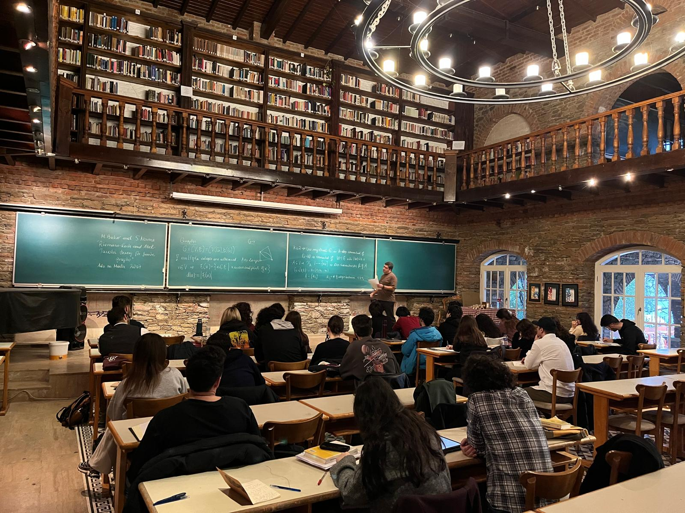
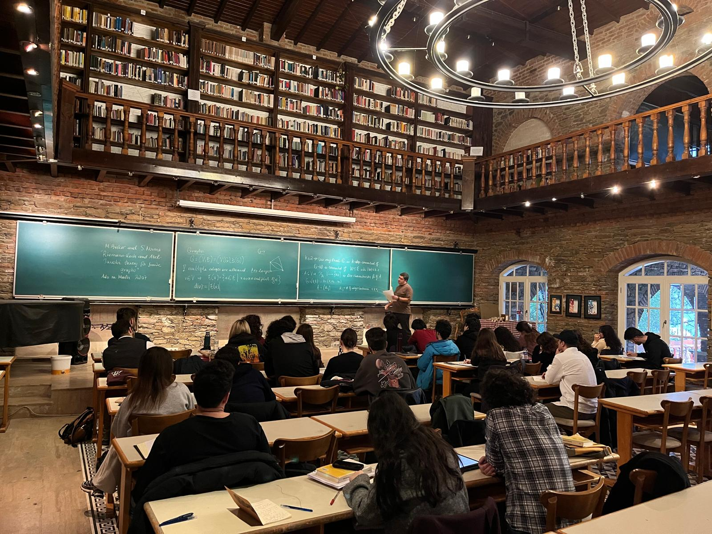
 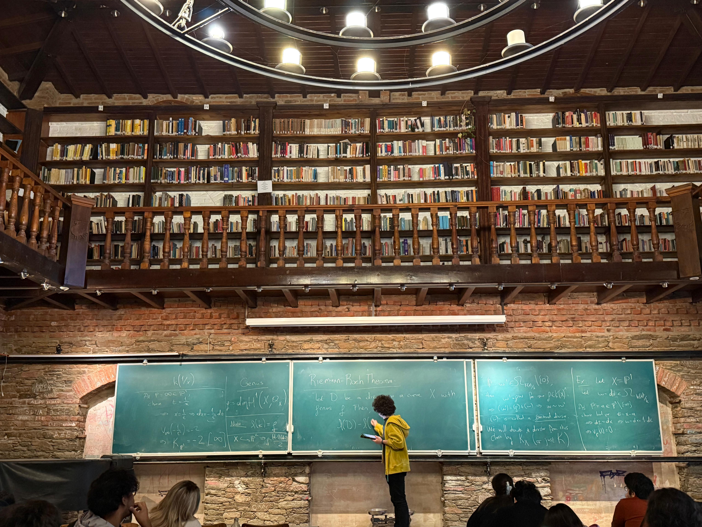
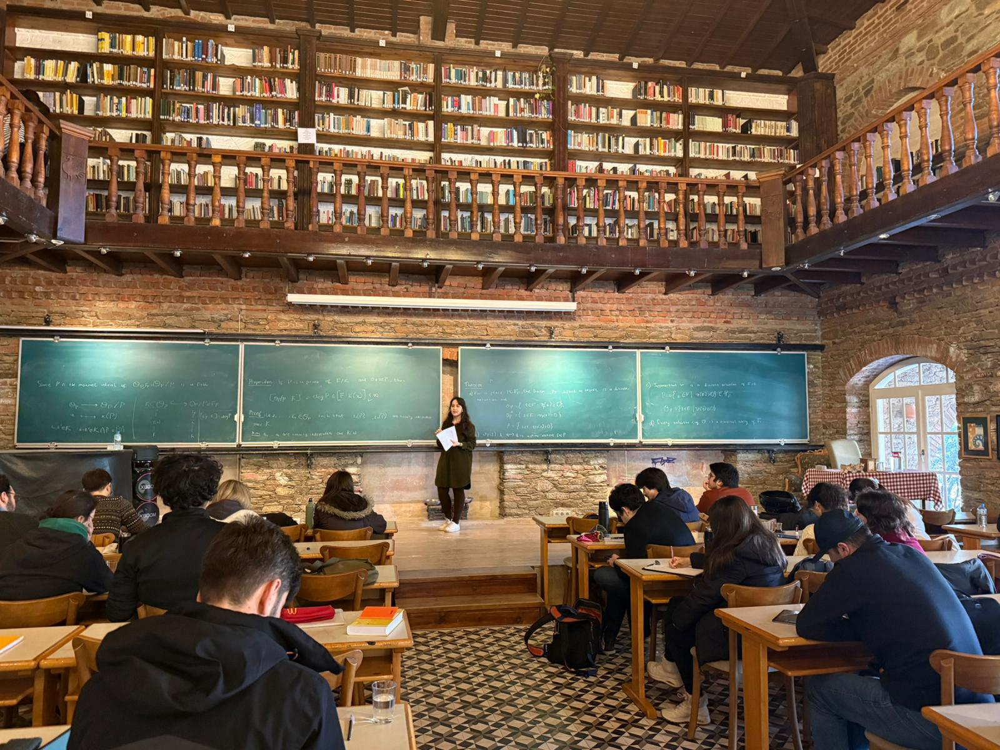
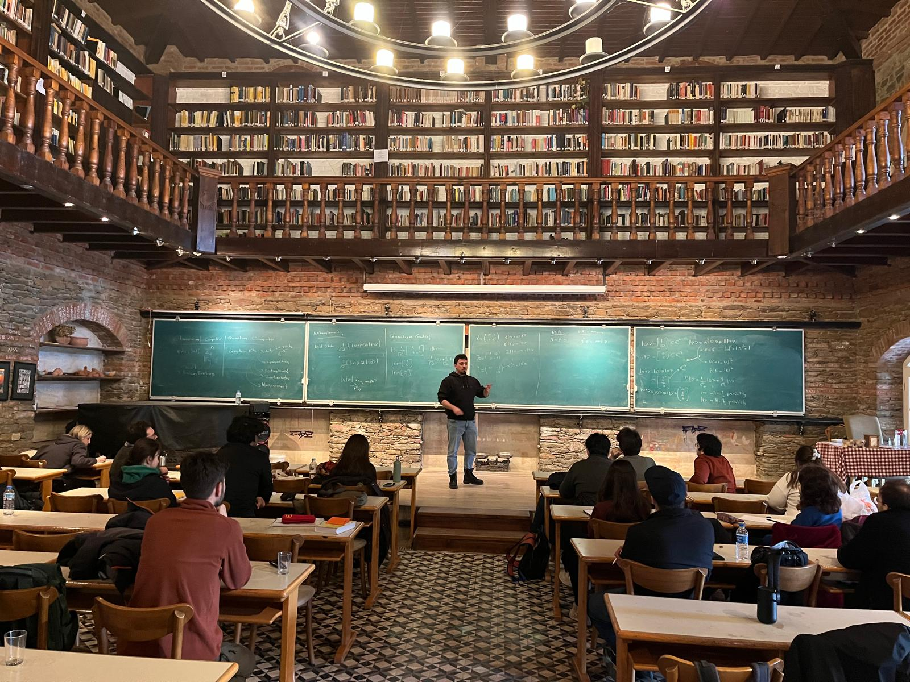
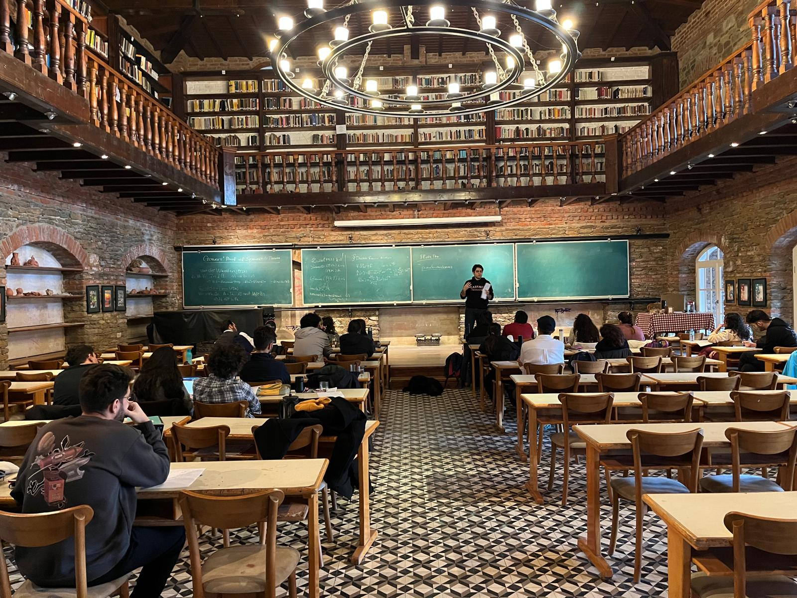
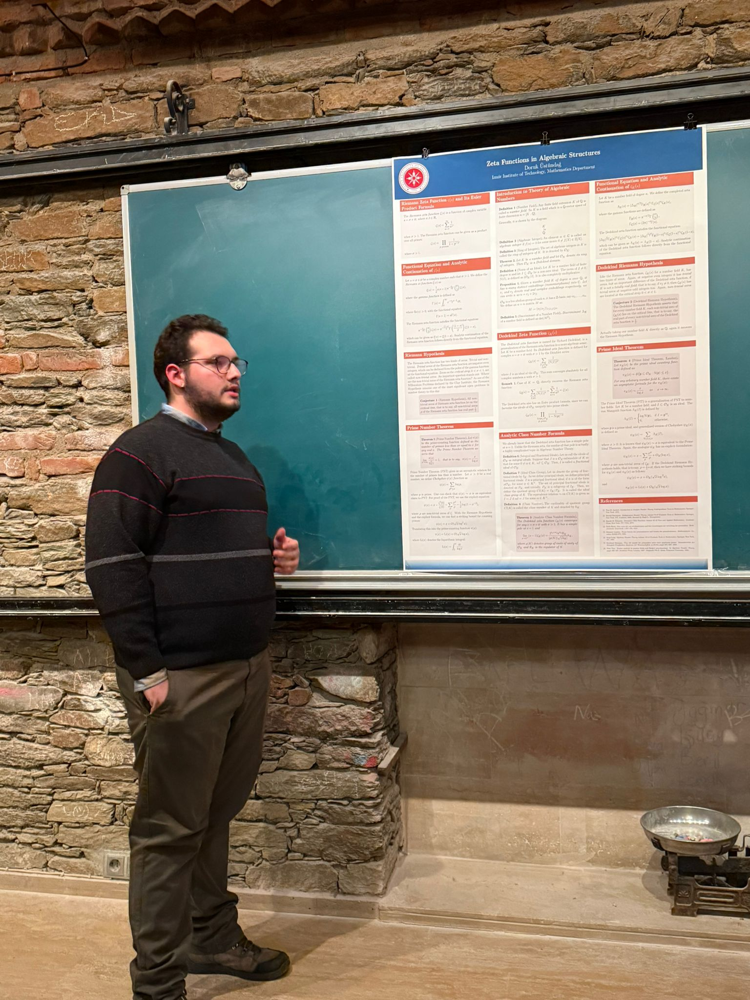
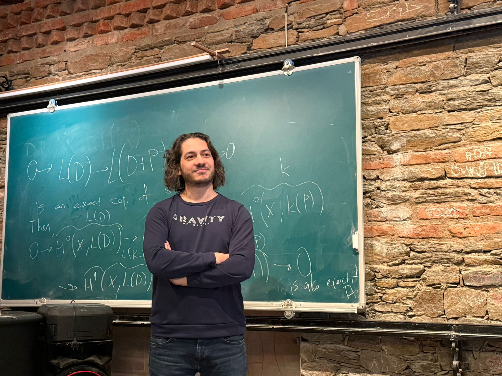
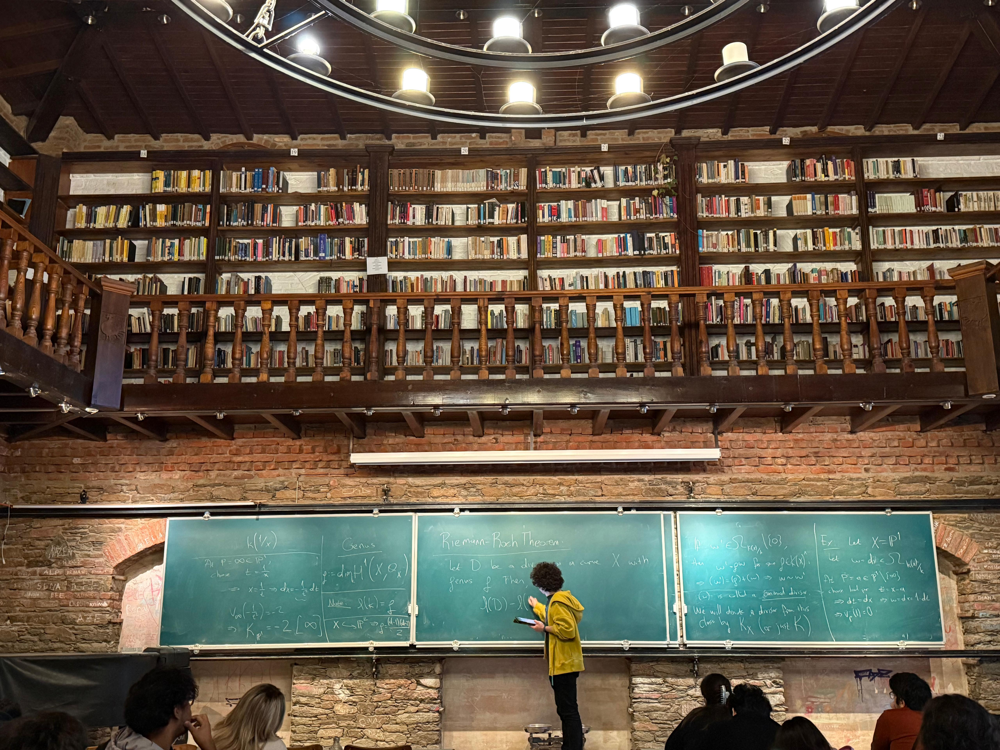
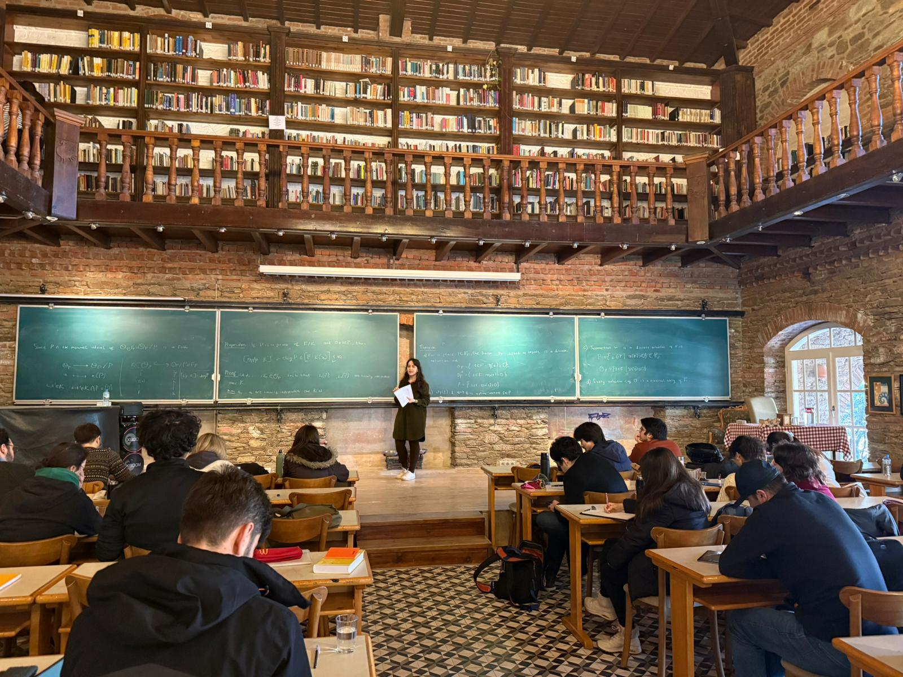
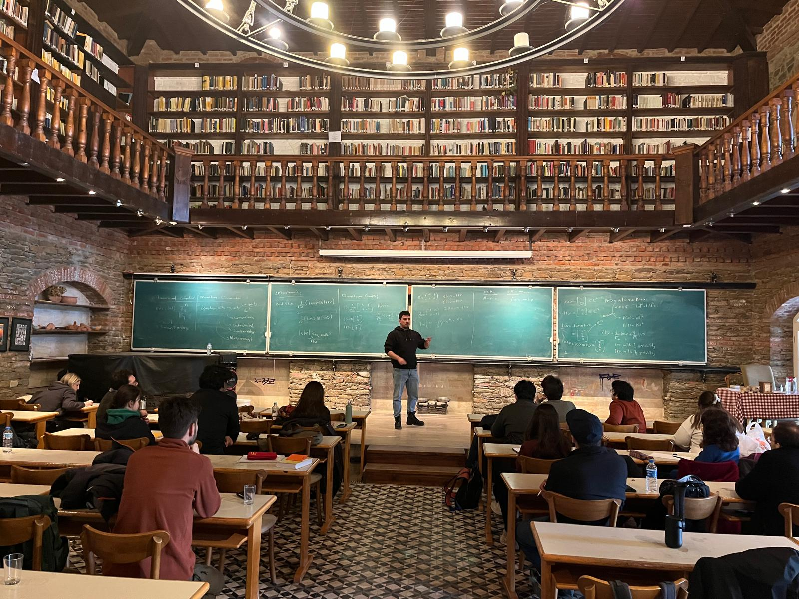
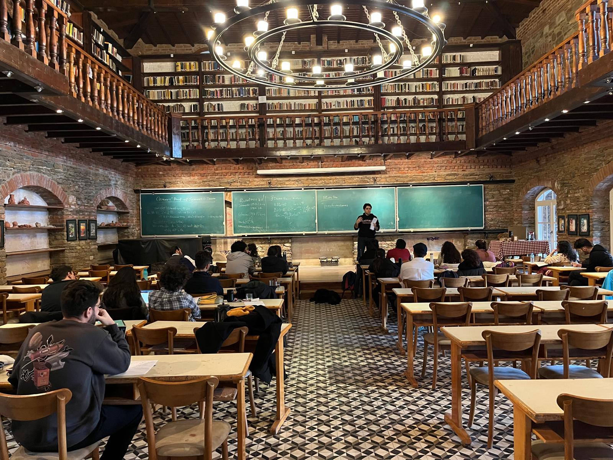
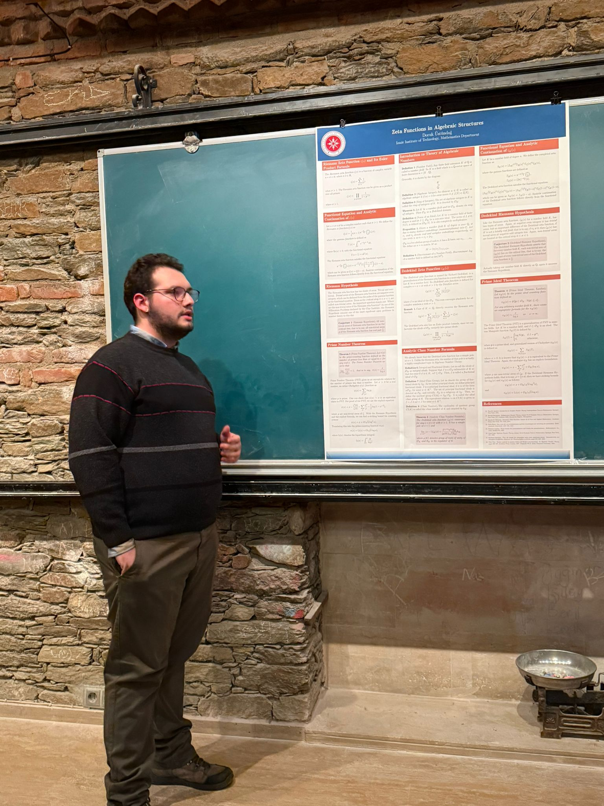
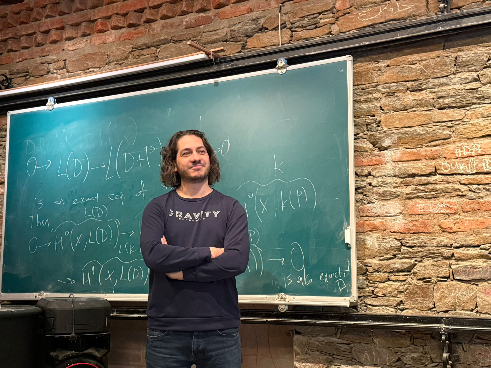
2025
These lectures introduce key tools in additive number theory, focusing on structural results and analytic methods, with classical and modern applications.
Click for the program webpage in NMK website.Introduction to Geometry of Numbers
Selçuk Demir - Özyeğin University
Abstract: Geometry of Numbers is a fascinating subject which started with the works of Minkowski.
Lecture Notes by Mehmet KaymakFreiman-Ruzsa Theorem
Haydar Göral - İzmir Institute of Technology
Abstract: The Freiman-Ruzsa theorem states that if a finite subset of a group has a small doubling constant, then this set is “close” to being a subgroup or a generalized arithmetic progression.
Lecture Notes by Mehmet KaymakThe Circle Method and Waring’s Problem
Sadık Eyidoğan - Çukurova University
Abstract: The circle method is a technique, originated by Ramanujan, to estimate the coefficients in a generating function.
Lecture Notes by Mehmet KaymakPoster Session
Zeta Functions in Algebraic Structures pdf
Naz Kazar - İzmir Institute of Technology
Abstract: Based on Bernhard Riemann’s ground-breaking 1859 memoir On the Number of Primes Less Than a Given Magnitude, his only paper on number theory, this study examines the deep connection between the distribution of prime numbers and the analytic structure of the Riemann zeta function. Beginning with the classical asymptotic estimates of Gauss and Legendre for the prime counting function π(x), the work outlines how the analytic continuation of ζ(s) to the entire complex plane is established through the Gamma function, and the fundamental functional equation is derived using contour integration techniques. Central to this work is the demonstration that the error term in the estimate for π(x) is governed by the distribution of the non-trivial zeros of the zeta function. Consequently, the Riemann Hypothesis implies a much tighter bound for this error. Riemann conjectured that all non-trivial zeros of the zeta function on the complex plane lie on the critical line Re(s) = 1/2. The well-known hypothesis remains one of the most significant unsolved problems in mathematics.
Elliptic Curves and the Birch and Swinnerton-Dyer Conjecture pdf
Begüm Gülgen - İzmir Institute of Technology
Abstract: This study outlines the mathematical framework surrounding the Birch and Swinnerton-Dyer (BSD) Conjecture and examines the connection between the algebraic structure of elliptic curves and the analytic behavior of their associated L-functions. Beginning with the Weierstrass normal form and the geometric group law, which makes the set of rational points E(ℚ) a finitely generated abelian group by Mordell’s Theorem, the work explains how the behavior of the curve over finite fields 𝔽p—bounded by Hasse’s Theorem—is connected to the L-function L(E, s). It then discusses the Wiles–Taylor theorem, which ensures the analytic continuation of L(E, s) to the entire complex plane, allowing a Taylor expansion around s = 1. Birch and Swinnerton-Dyer conjectured that the algebraic rank of the curve equals its analytic rank—defined as the order of vanishing of the L-function at s = 1—thus providing a potential criterion for determining whether the number of rational solutions of a given cubic equation of two variables is finite or infinite.
2024
The lectures collectively highlight a common theme: methods for detecting and proving unavoidable structure in arithmetic and combinatorial settings. Different tools—analytic, combinatorial, probabilistic, ergodic/topological, and algebraic—are presented as complementary ways to quantify “randomness vs. structure,” to force the existence of patterns under density assumptions, and to study how arithmetic phenomena are distributed.
Click for the program webpage in NMK website.The Circle Method and Roth’s Theorem
Haydar Göral - İzmir Institute of Technology
Abstract: We introduce the circle method and as an application we prove Roth’s theorem on arithmetic progressions.
Lecture Notes by Mehmet KaymakSzemerédi’s Regularity Lemma
Ahmet Batal & Mustafa Kutay Kutlu - İzmir Institute of Technology
Abstract: Szemerédi’s regularity lemma, triangle removal lemma, Roth’s theorem.
Lecture Notes by Mehmet KaymakProbabilistic Number Theory
Doğa Can Sertbaş - İstinye University
Abstract: Basic Ramsey theory, lower bounds for Ramsey and van der Waerden numbers, basic probability theory, sum-free sets
Lecture Notes by Mehmet KaymakRamsey Theory and Ultrafilters
Sadık Eyidoğan - Çukurova University
Abstract: We introduce the space of ultrafilters βN and its topological properties. We also explain limits along ultrafilters. Then, we recall the relevant notions from Ramsey theory and give a proof that all partition regular properties correspond to ultrafilters. We define the addition of ultrafilters, which turns the space of ultrafilters βN into a left topological semigroup. Finally, we will collect information about the ideals of the semigroup βN to the point that we can give a proof of van der Waerden’s theorem.
Lecture Notes by Mehmet KaymakThe Chebotarev Density Theorem
Çağatay Altuntaş - İstanbul Technical University
Abstract: We begin with a short introduction to algebraic number theory, outlining the main concepts needed to study arithmetic phenomena in number fields. Particular attention is given to Galois extensions and the behavior of prime ideals. We then formulate the Chebotarev Density Theorem and explain its central role in understanding how primes are distributed across Galois conjugacy classes.
2023
The lectures give a brief tour of several standard methods in number theory. They touch on additive questions, sieve ideas, and basic Fourier-analytic tools, and indicate how these viewpoints relate to questions about primes and distribution.
Click for the program webpage in NMK website.Elementary Methods in Additive Number Theory
Selçuk Demir - Dokuz Eylül University
Abstract: Schnirelmann density, Mann’s theorem, Waring’s problem.
Lecture Notes by Mehmet KaymakSelberg’s sieve and its applicationsm
Haydar Göral - İzmir Institute of Technology
Abstract: Basic sieve methods, Selberg’s sieve, twin primes, Brun-Titchmarsh theorem.
Lecture Notes by Mehmet KaymakFourier Transform and Number Theory
Ahmet Batal - İzmir Institute of Technology
Abstract: Fourier transform and its properties, some additive combinatorics, equidistribution.
Lecture Notes by Mehmet KaymakAn Elementary Proof of the Prime Number Theorem
Doğa Can Sertbaş - İstinye University
Abstract: Möbius Convolution, Abel’s Summation Formula, Chebyshev functions, Mertens’ theorems, Selberg’s Identity, Selberg’s Fundamental Formula
Lecture Notes by Mehmet Kaymak2020
The winter camp will be on additive combinatorics and Roth’s theorem.
Click for the program webpage in NMK website.Graph Theory and its Applications to Additive Combinatorics
Şermin Çam Çelik - Özyeğin University
Abstract: Some graph theory, Szemeredi regularity lemma, triangle removal lemma, Roth’s theorem via graph theory
Additive Combinatorics via Ergodic Theory
Selçuk Demir - Dokuz Eylül University
Abstract: Topological dynamics and Poincare recurrence, Furstenberg correspondence, proof of Roth’s theorem via ergodic methods.
Fourier Analysis and Additive Combinatorics
Haydar Göral - Dokuz Eylül University
Abstract: Additive characters, finite Fourier analysis, Fourier transform, Fourier coefficients, Roth’s theorem via Fourier analysis.
2019
Distribution of primes and arithmetic progressions play a fundamental role in arithmetic. The aim of Arithmetic Winter School is to give an introduction to arithmetic combinatorics and multiplicative number theory using tools from analysis and complex calculus. The necessary background on Dirichlet series and tools from additive number theory will be discussed in le7ctures. van der Waerden theorem will be proved. Then, we will give a sketch of the proof of Szémeredi’s theorem, and we will prove the prime number theorem and the functional equation of the Riemann zeta function.
Click for the program webpage in NMK website.Around the Szémeredi theorem
Selçuk Demir - Dokuz Eylül University
Abstract: 1. Van der Waerden theorem 2. Topological Dynamics and Poincare recurrence 3. Multiple Recurrence and Furstenberg Correspondence 4. Sketch of the proof of the Szemeredi theorem
Prime Number Theory
Haydar Göral - Dokuz Eylül University
Abstract: The Riemann zeta function and its analytic properties, zero-free region for the Riemann zeta function, fundamental formula, proof of the prime number theorem, explicit formulas.
Dirichlet Series
Şermin Çam Çelik - Özyeğin University
Abstract: Dirichlet series, their algebraic and analytic properties, functional equation of the Riemann zeta function, Riemann’s memoir.